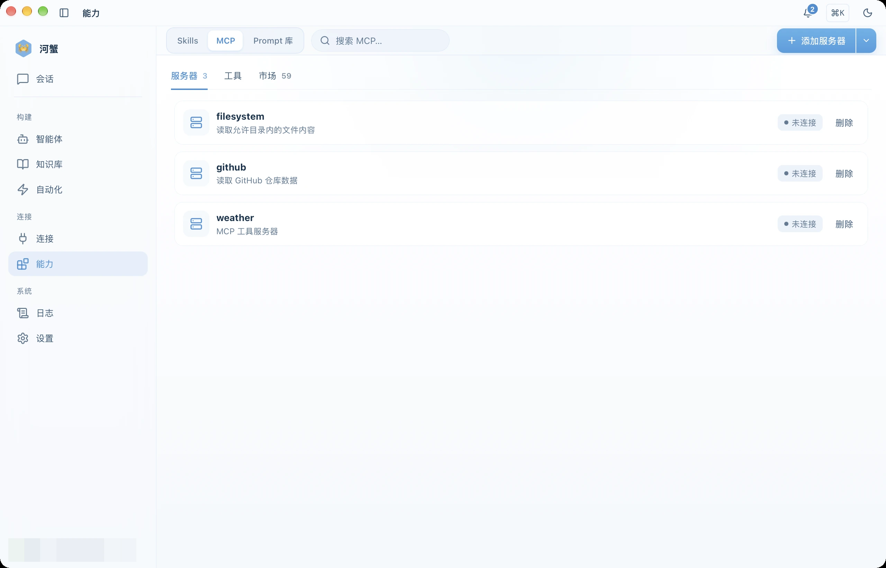
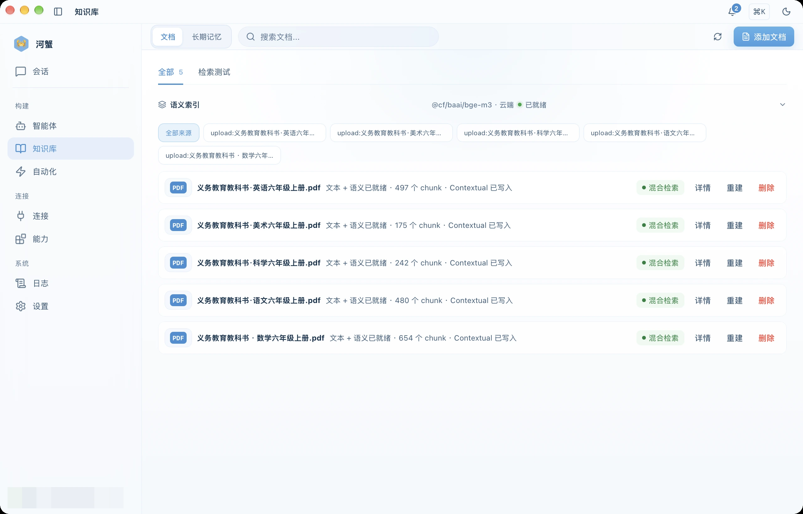
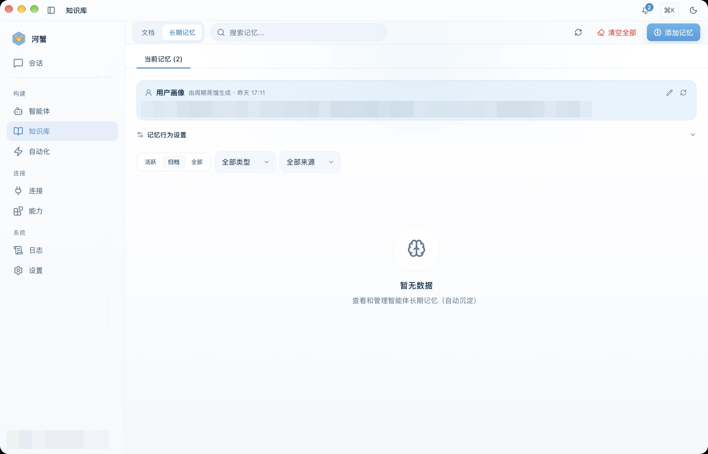
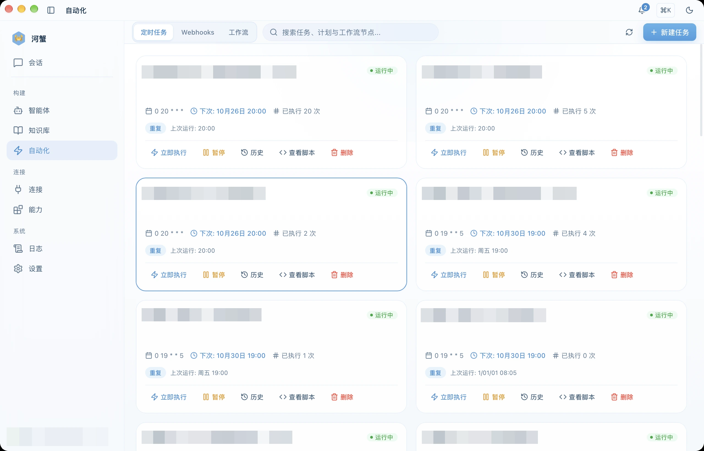
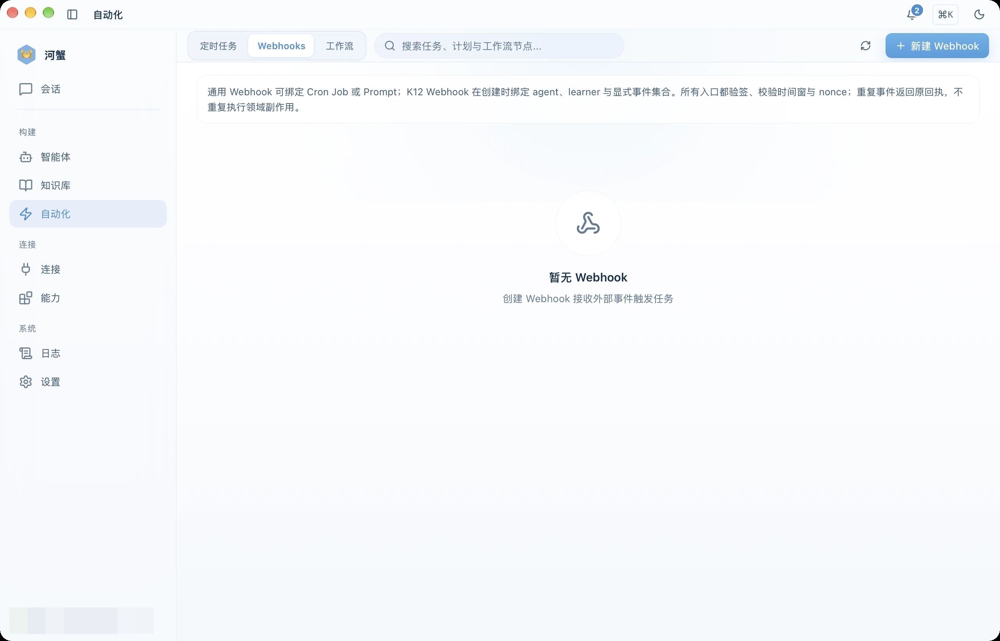
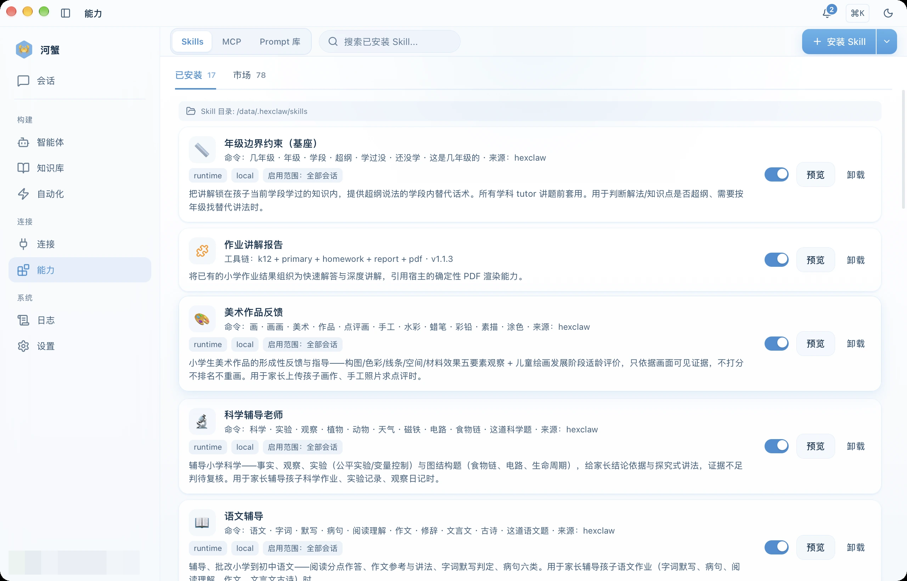
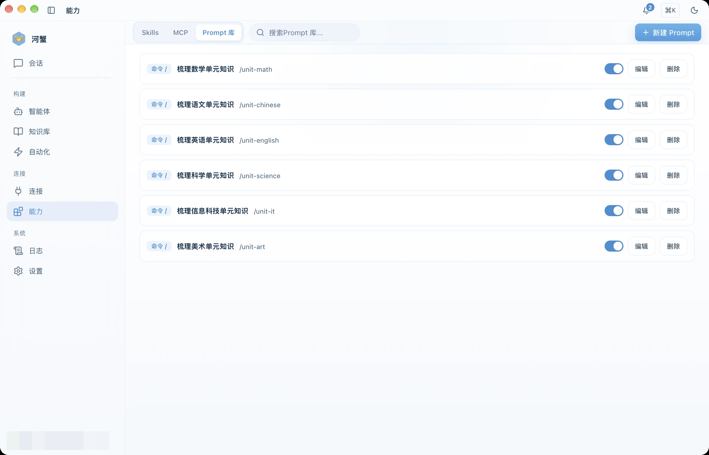
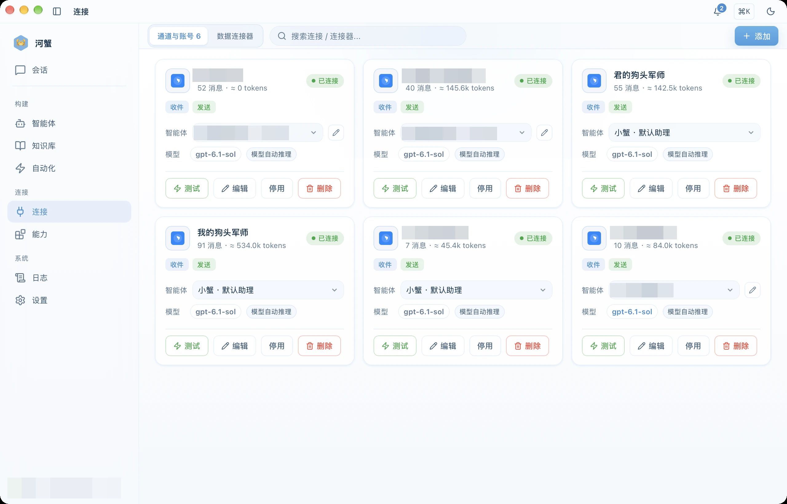
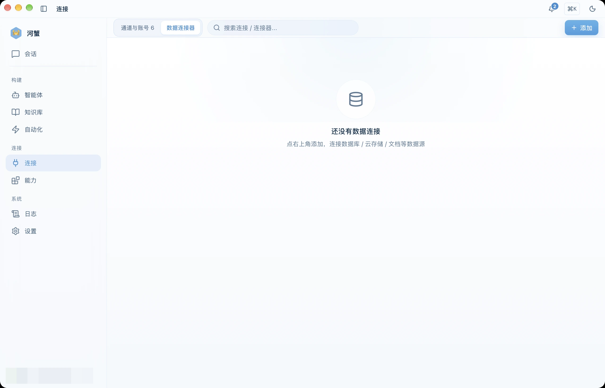
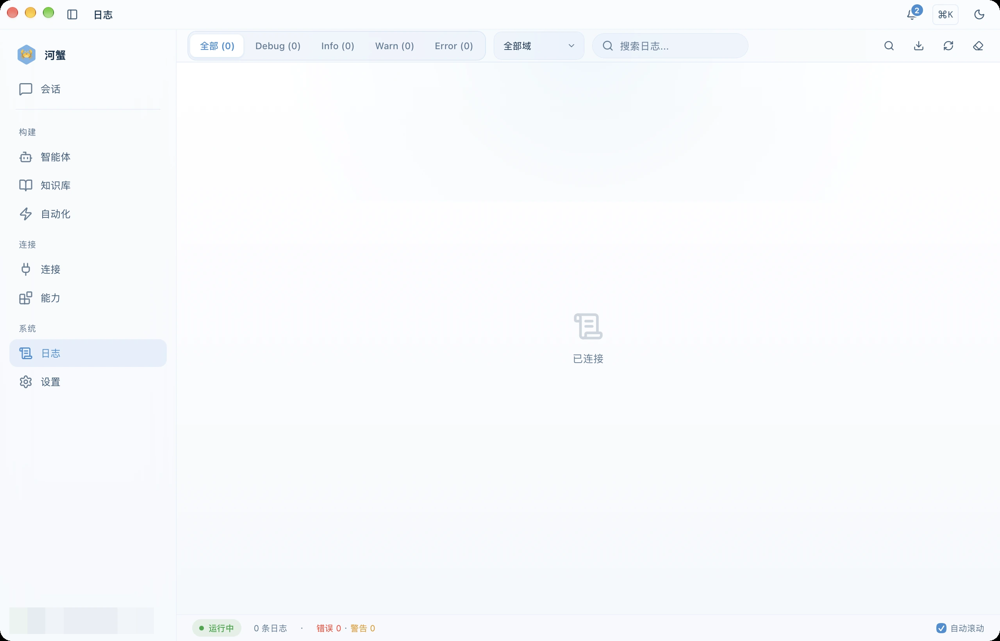

Advanced Features
MCP, RAG knowledge bases & memory, automation (scheduled jobs / webhooks / workflows), the Connections hub & data connectors, skills, the Prompt library, and security controls.
Available features depend on your installed version, connected service, and enabled capabilities. Existing screenshots illustrate where to start.
Use and Manage Resources in Chat
Ask which resources are configured, or have the agent create, install, update, enable, and run them. Actions follow your current permissions and settings, with resource states reported from the actual service results.
| Ask in chat | What HexClaw can do |
|---|---|
| “Which MCP servers are connected? What workflows and agents do I have?” | Read configured resources, connection states, and details. You can also query skills, prompts, memories, knowledge content, and conversation history. |
| “Add this text to my knowledge base.” | Save the text for processing. Retrieval availability depends on the actual processing and index state. |
| “Remember this preference; update the old information.” | Add, update, remove, or pin long-term memories. |
| “Turn these steps into a skill and enable it.” | Create or update a skill, then save, enable, and load it. You can also find and install existing skills or MCP servers. |
| “Save this prompt; create an assistant from this template.” | Create, update, enable, or disable prompts, and create or update agents using a template or supplied settings. |
| “Organize this material every day at nine; run it once now.” | Create or update a scheduled job, list, pause, resume, or remove jobs, and start an immediate run when explicitly requested. |
| “Save these steps as a workflow, then run it once.” | Create or update a workflow definition, start the requested run, and inspect the result. Webhook bindings and enabled states can also be managed. |
The Prompt library, agents, and workflows also have dedicated pages that use the same resources as chat. A query does not start a run, and a request for a draft does not enable it. Saving, loading, connecting, execution, and delivery each retain their actual state.
MCP Integration
Model Context Protocol (MCP) lets HexClaw agents call external tools and services.
Register an MCP Server
- Open the Capabilities → MCP tab
- Click "Add Server"
- Provide the server name and connection endpoint
- Select a transport:
stdio,sse, orstreamable_http - Connect and let HexClaw auto-discover available tools
Once connected, MCP tools can be assigned to agents. HexClaw shows live connection state as connected, disconnected, or error.
In chat, you can query configured MCP servers and available tools, or search for and install an existing MCP server. External services still require the relevant account, connection settings, and authorization.

MCP Server Configuration Example
This example shows the Filesystem MCP command and arguments. Select stdio when adding a server and enter the corresponding command and args. Replace /path/to/your/projects with the directory you want to access. Node.js and npm must be installed on the machine running the service; for a cloud connection, the directory is on that cloud machine.
{
"mcpServers": {
"filesystem": {
"command": "npx",
"args": ["-y", "@modelcontextprotocol/server-filesystem@2026.7.10", "/path/to/your/projects"]
}
}
}Knowledge Base (RAG)
Upload documents to your knowledge base so agents can retrieve relevant content and sources for a task. Data is stored in the local or cloud service you are currently connected to.
Supported Inputs
- PDF, DOCX, Markdown, and TXT files
- Automatic chunking and vector embedding
- Semantic search retrieval
Workflow
- Open the Knowledge Base page
- Upload one or more documents
- Check processing and index progress until the document is ready for retrieval
- In chat, the agent retrieves relevant content as the task requires
A successful upload, a saved original, and retrieval readiness are separate states. You can also ask the agent to add text from a conversation. Check the processing result after saving and use the task's available recovery action if processing fails or is interrupted.

Semantic Memory
Long-term memory preserves facts and preferences across sessions. Automatic capture follows your settings; you can also explicitly ask HexClaw to remember, correct, or forget an item.
- Automatic capture - when enabled, extract information suitable for long-term use
- Semantic search - in the Knowledge → Memory tab, search by keyword or semantic similarity
- Type filters - narrow results by memory type
- Manual management - review, delete, or bulk clean entries
- Chat management - add, update, remove, pin, or unpin an item, with feedback based on the saved result

Scheduled Jobs (Cron)
Schedule agents to run automatically at fixed times.
Create a Scheduled Job
- Open the Automation → Scheduled Jobs tab
- Click "Create Job"
- Select an agent, enter a cron expression, and provide the prompt
- Enable the job
# Cron expression examples
0 9 * * * Every day at 9:00
0 */2 * * * Every 2 hours
0 9 * * 1-5 Weekdays at 9:00HexClaw also supports manual triggering, execution history, and heartbeat monitoring.
Describe the schedule and task in chat to create or update a job, then list, pause, resume, or remove it. Ask explicitly for an immediate run; creating a schedule does not add an extra run. Results go to the configured destinations, with execution and delivery states shown separately. For tasks with multiple steps, use a workflow.

Inbound Webhook Triggers
Create an inbound trigger under Automation → Webhooks so an external system can start a bound task, prompt, or agent:
- Signature verification — HMAC-SHA256 with a dedicated secret
- Replay handling — timestamp and nonce checks, with the original receipt returned for duplicate events
- Bindings — associate the trigger with a task, prompt, or agent
- Receipts — inspect recent events, failures, and available retry actions

Skill Marketplace
Under Capabilities → Skills, manage installed skills and browse the marketplace provided by your current HexClaw service. You can also install from a local file or URL:
- Categories: communication, productivity, development, and data
- Installation: one-click install with per-agent enable or disable
- Discovery: filter by category or keyword and inspect the author, version, and dependencies
- Configuration: some skills expose custom parameters
In chat, you can search for, install, remove, or list existing skills, and create or update your own. When you ask to save and enable a skill, the agent saves, activates, and loads it under your current permissions. A draft-only request saves only a draft. Installed, enabled, and callable states are reported separately.

Prompt Library
Manage reusable commands and prompt fragments under Capabilities → Prompt Library, or query, create, update, enable, and disable them in chat. Existing model, tool-scope, and enabled settings remain unchanged unless requested.

Security Gateway
Manage tool confirmations and execution scope under Settings → Automation permissions. The gateway checks below belong to the selected HexClaw service deployment; configure them using the service documentation and its actual configuration.
The local desktop service starts with gateway prompt-injection detection, PII detection, and content filtering disabled. Self-hosted services follow their deployment configuration. PII detection does not mean automatic redaction: it does not establish that text sent to a model has been rewritten or removed. See the third-party AI service notice for the data path.
| Control | Description |
|---|---|
| Security gateway | Enable or disable request safety checks |
| Prompt injection detection | Detect and block malicious prompt content |
| PII detection | Detect personally sensitive information; this does not mean the original text is automatically rewritten or removed |
| Content filtering | Block inappropriate content |
| Token limit | Maximum tokens per request, from 256 to 128,000 |
| Rate limiting | Requests per minute, from 1 to 600 RPM |
Model Reasoning and Research
Select a model in the toolbar at the bottom of the chat composer and adjust its supported reasoning settings. Some models manage reasoning automatically; others offer a toggle or effort levels. You continue using the same composer.
- Define the task — provide the question, research scope, and expected output format
- Use sources and tools — connected tools and knowledge retrieval supply material when the task needs it
- Inspect the result — check actual tool activity, cited sources, and final artifacts
Reasoning content is displayed only when the model returns it. Enabling reasoning does not automatically enable web search or verify sources. Use the workflow canvas when you need an explicit sequence of steps.
Connections · IM Channels
HexClaw can connect to multiple instant messaging platforms, allowing you to chat with AI remotely via mobile messages. Go to the Connections hub (the "Connect" sidebar group) → Channels & Accounts to configure:
| Platform | Configuration | Notes |
|---|---|---|
| Feishu (Lark) | App ID + App Secret | Create an enterprise app on the Feishu Open Platform |
| DingTalk | App Key + App Secret + Robot Code | Create an internal app on the DingTalk Open Platform |
| WeCom | Corp ID + Agent ID + Secret | Create a self-built app in the WeCom admin console |
| App ID + App Secret + Token | Requires a WeChat service account | |
| Slack | Bot Token + Signing Secret | Create an App via Slack API |
| Discord | Bot Token | Create a Bot in the Discord Developer Portal |
| Telegram | Bot Token | Create via @BotFather |
The current main-branch service starts or reconnects an enabled account when its configuration is saved. Inspect the account's state and errors, and use its connection test when needed. A connected account is separate from delivered messages: verify destinations and platform receipts as well. If an older installed version requests a restart, follow that version's instructions.

Data Connectors (MySQL / Redis and Others)
Manage database and cache connections under Connections → Data Connectors:
- Inspect the connection type, address, database, and current state
- Test the connection before using it through the connected MCP tools
- Complete the configuration of entries marked as unconfigured before using them

Logs & Observability
